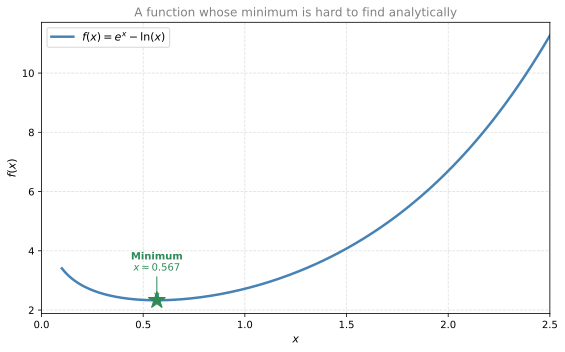
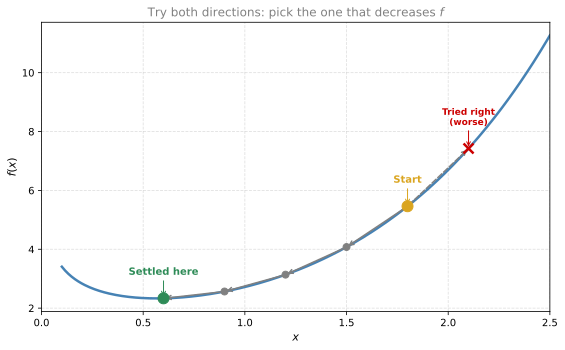
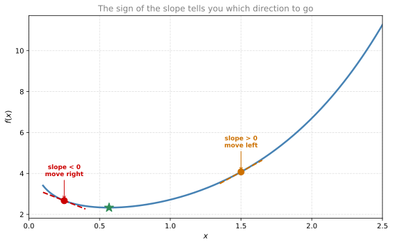
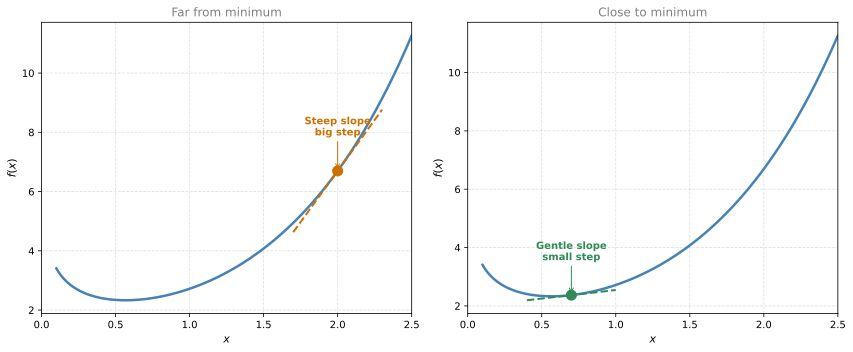
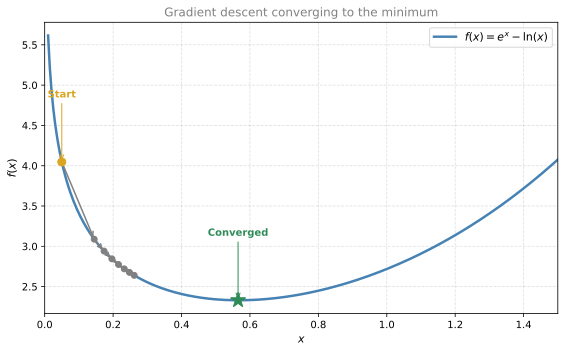
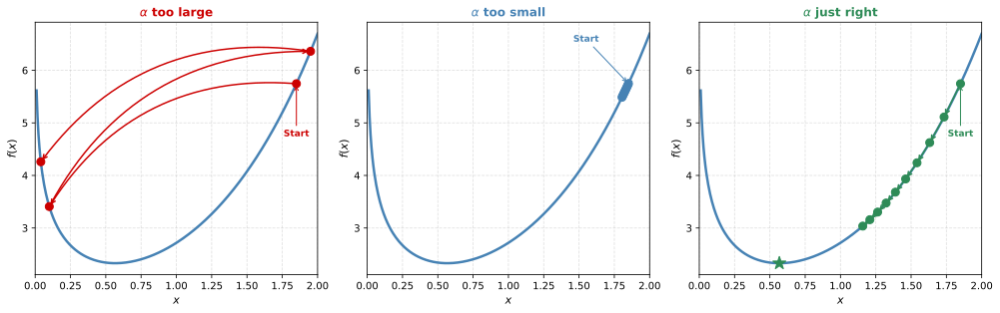
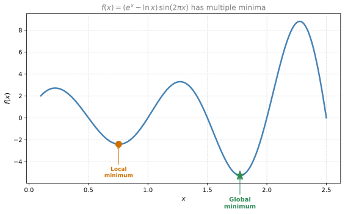

Gradient Descent
calculus
So far you have learned how to solve optimization problems using derivatives and gradients. For a function of one variable, you take the derivative,…
So far you have learned how to solve optimization problems using derivatives and gradients. For a function of one variable, you take the derivative, set it to zero, and solve for the variable. For a function of \(n\) variables, you take the partial derivative with respect to each variable (holding the others constant), set each to zero, and solve the resulting system of \(n\) equations in \(n\) unknowns. When \(n = 2\) this is manageable, but in real machine learning problems \(n\) can be in the millions. Solving a system of millions of equations is extremely expensive, and often the equations themselves have no clean analytical solution.
In this section, you will see a method that is iterative and powerful for minimizing (or maximizing) functions, especially in many variables. The method is called gradient descent.
Let us start with gradient descent in one variable, and then work our way up to several variables.
Why We Need an Iterative Method
Consider the function:
\[ f(x) = e^x - \ln(x) \]
To find the minimum, you would compute \(f'(x) = e^x - \frac{1}{x}\) and set it to zero:
\[ e^x - \frac{1}{x} = 0 \quad \Longleftrightarrow \quad e^x = \frac{1}{x} \]
Try solving this. It is actually quite hard to do analytically. The solution is \(x \approx 0.5671\) (the Omega constant). The fact that this is hard to solve should not stop us from finding a good answer.
The “Try Both Directions” Method
Here is a simple idea. Pick a random starting point and try moving left and right by a small step. Keep whichever direction gives a smaller function value, and repeat.

The method works like this:
- Start at some random point.
- Try left (subtract a small step) and try right (add a small step).
- Move to whichever neighbor has a smaller function value.
- Repeat until neither direction improves the result.
The point you end up at may not be the exact minimum, but it is close. And this method does not require solving any equations analytically.
Note
The limitation: This approach works, but it is wasteful. You are trying both directions blindly each time. Can we do better? Yes. The derivative already tells us which direction leads downhill. That is the key idea behind gradient descent, which we will develop next.
Using the Derivative to Choose Direction
In the previous method, you tried both directions and picked the better one. But there is something smarter you can do. Look at the derivative at your current point.
- If you are to the left of the minimum, the slope is negative. You want to move right (add to \(x\)).
- If you are to the right of the minimum, the slope is positive. You want to move left (subtract from \(x\)).
In both cases, the correct move is to subtract the slope from your current position.

The formula is simple. If your current point is \(x_0\), your new point is:
\[ x_1 = x_0 - f'(x_0) \]
Why does this work?
- If \(f'(x_0) < 0\) (left of minimum), you subtract a negative number, so you move right.
- If \(f'(x_0) > 0\) (right of minimum), you subtract a positive number, so you move left.
Learning Rate
There is a problem with the raw formula \(x_1 = x_0 - f'(x_0)\). If you are at a very steep part of the curve, the derivative is large, and you take a huge jump. Large jumps are chaotic. You might overshoot the minimum entirely and end up far away.
The fix is to multiply the derivative by a small number before subtracting. This small number is called the learning rate, denoted \(\alpha\) (alpha):
\[ x_1 = x_0 - \alpha \cdot f'(x_0) \]
The learning rate (\(\alpha\)) controls your step size. There is a whole science behind choosing good learning rates, but for now, think of it as a dial between “cautious” (small \(\alpha\)) and “aggressive” (large \(\alpha\)).
This formula also has a built-in bonus. When you are far from the minimum (steep region), the derivative is large, so your step is relatively big. When you are close to the minimum (flat region), the derivative is small, so your step is tiny and precise. It is like golf: you hit hard when you are far from the hole, but use precision when you are close.

Gradient Descent Algorithm
Putting it all together, the algorithm is:
- Choose a learning rate \(\alpha\) (a small positive number).
- Choose a starting point \(x_0\).
- Update using the rule: \(x_k = x_{k-1} - \alpha \cdot f'(x_{k-1})\)
- Repeat step 3 until the steps become negligibly small (you are close enough to the minimum).
Note
Key insight: You never need to solve \(f'(x) = 0\). You only need to evaluate the derivative at your current point and apply the update formula. This is a huge improvement over the analytical approach.
Example: Gradient Descent on \(f(x) = e^x - \ln(x)\)
Let us try a few iterations by hand with starting point \(x_0 = 0.05\) and learning rate \(\alpha = 0.005\).
Recall that \(f'(x) = e^x - \frac{1}{x}\).
Iteration 1:
\[ f'(0.05) = e^{0.05} - \frac{1}{0.05} = 1.051 - 20 = -18.949 \]
\[ x_1 = 0.05 - 0.005 \times (-18.949) = 0.05 + 0.0947 = 0.1447 \]
Iteration 2:
\[ f'(0.1447) = e^{0.1447} - \frac{1}{0.1447} = 1.156 - 6.911 = -5.755 \]
\[ x_2 = 0.1447 - 0.005 \times (-5.755) = 0.1447 + 0.0288 = 0.1735 \]
Each iteration brings us closer to the minimum at \(x \approx 0.5671\). After many iterations, we converge.

Notice that the early steps are large (steep region, large derivative) and the later steps become tiny (flat region near the minimum). The algorithm naturally slows down as it approaches the answer.
What Is a Good Learning Rate?
The learning rate \(\alpha\) is a big deal in machine learning. Finding a good learning rate can be difficult, and it strongly influences how well your model performs.
Too large: If \(\alpha\) is too big, you overshoot the minimum and may never find it because your steps keep jumping past it.
Too small: If \(\alpha\) is too tiny, you take forever to reach the minimum, or perhaps never reach it in a practical number of steps.
Just right: You want a learning rate that balances speed and stability.

Finding the perfect learning rate is actually an active research problem. There are adaptive methods that adjust \(\alpha\) during training, but there is no single formula that works for every problem.
Local Minimum Problem
There is another issue with gradient descent. If the function has multiple minima, gradient descent will take you to whichever minimum is closest to your starting point, not necessarily the global minimum.
Consider the function \(f(x) = (e^x - \ln x) \cdot \sin(2\pi x)\). It has several local minima:

There is no guaranteed way to overcome this problem. But a practical approach is to run gradient descent multiple times with different starting points. If you try enough starting points, chances are one of them will land you at (or near) the global minimum.
Interactive Lab: Gradient Descent
Note
This is an interactive tool to experiment with gradient descent on \(f(x) = e^x - \ln(x)\). Adjust the learning rate, number of iterations, and starting point, then click ▶ Run to watch the algorithm step toward the minimum.
How to use this tool:
- Set starting point, learning rate, and number of iterations.
- Click ▶ Run Gradient Descent to watch the algorithm animate step by step.
Things to explore:
- Try
learning_rate = 0.5and see the algorithm overshoot. - Try
learning_rate = 0.04with only 25 iterations. Does it converge? - Start at
x₀ = 0.2(steep region). What happens withlearning_rate = 0.1?
Python Implementation
The gradient descent function is remarkably simple:
import numpy as np
def gradient_descent(dfdx, x, learning_rate=0.1, num_iterations=100):
for iteration in range(num_iterations):
x = x - learning_rate * dfdx(x)
return xDefine \(f(x) = e^x - \ln(x)\) and its derivative:
def f(x):
return np.exp(x) - np.log(x)
def dfdx(x):
return np.exp(x) - 1/xRun gradient descent with learning_rate = 0.1, starting at x = 1.6:
x_min = gradient_descent(dfdx, x=1.6, learning_rate=0.1, num_iterations=25)
print(f"Gradient descent result: x_min = {x_min:.10f}")
print(f"f(x_min) = {f(x_min):.10f}")Gradient descent result: x_min = 0.5671434157
f(x_min) = 2.3303661248Try different learning rates to see the effect:
for lr in [0.04, 0.1, 0.3]:
result = gradient_descent(dfdx, x=1.6, learning_rate=lr, num_iterations=25)
print(f"lr = {lr:.2f} → x = {result:.6f}, f(x) = {f(result):.6f}")lr = 0.04 → x = 0.575261, f(x) = 2.330526
lr = 0.10 → x = 0.567143, f(x) = 2.330366
lr = 0.30 → x = 0.567143, f(x) = 2.330366Try different starting points:
for x0 in [0.05, 0.5, 1.6, 2.0]:
result = gradient_descent(dfdx, x=x0, learning_rate=0.1, num_iterations=25)
print(f"x₀ = {x0:.2f} → x = {result:.6f}, f(x) = {f(result):.6f}")x₀ = 0.05 → x = 0.567144, f(x) = 2.330366
x₀ = 0.50 → x = 0.567143, f(x) = 2.330366
x₀ = 1.60 → x = 0.567143, f(x) = 2.330366
x₀ = 2.00 → x = 0.567143, f(x) = 2.330366